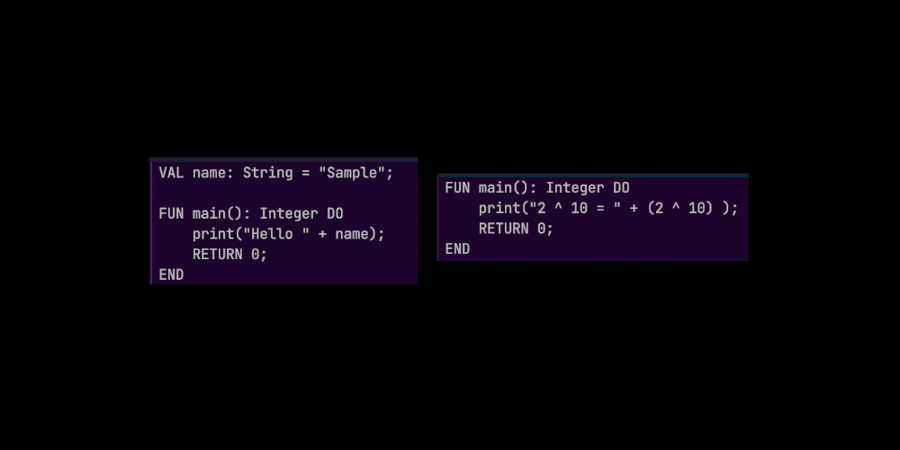
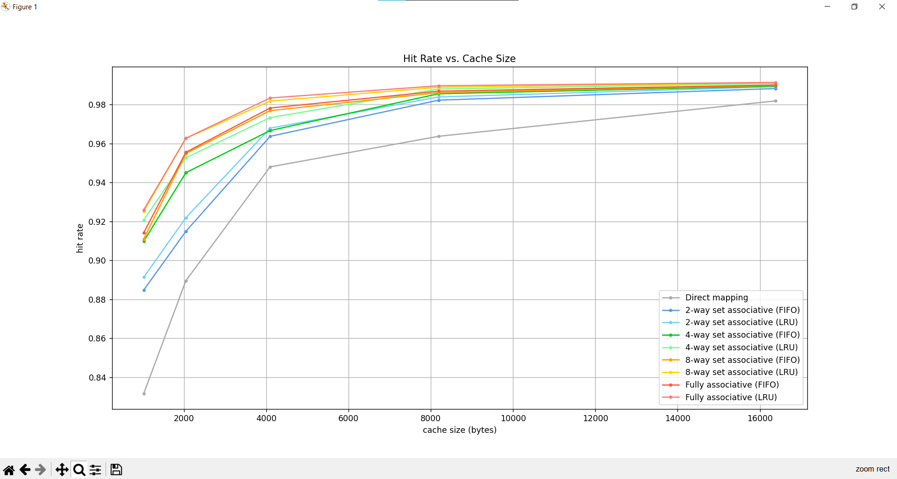

Nhovas
Completed on Dec 6th, 2022
Image of functional Nhovas code.
Nhovas is the name of the language that I programmed in my Introduction to Programming Languages class. We had to write a Lexer, Parser, Analyzer, Interpreter, and Generator, all inside of Java. For this project, I used IntelliJ Idea, and data structures provided by my professor.
Cache Simulation
Completed on Dec 15th, 2022
Image of Cache Simulation graph. I wrote this in Python, and it was very empowering to see how strong Python is right out of the box.
For this project, we had to write 3 different types of cache simulators, that simulated direct mapped, set associative (n-way), and fully associative caches. We had to implement a way to adjust cache size and set associativity, as well as map the performance of the three different caches onto a graph representing speed vs size. For this project, I used nvim and the command line. I used this time to start to get used to vim keybinds.
About Me

I am a software developer that is currently based out of Gainesville, Florida. I am in my junior year of my Computer Science degree, on track to graduate in four years. I am well versed in C++ and Java, and am teaching myself Python, Swift, and HTML/CSS/JS.